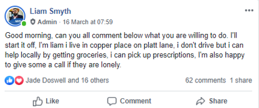
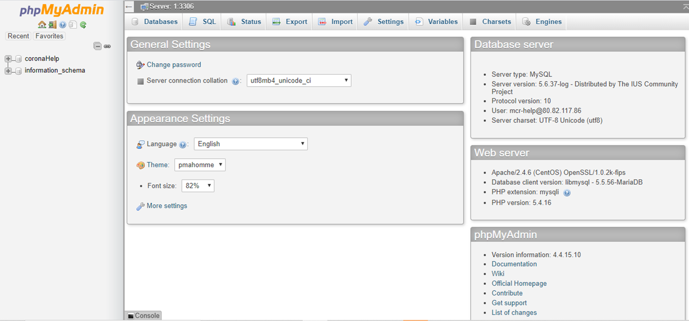

Published: 24/03/2020
Why This Project?
Coronavirus has led to millions of ‘high risk’ (CDC, 2019) individuals self-isolating. It was brilliant to see Manchester come together with groups like Manchester Coronavirus Support Network being created to help these vulnerable people. However, there was a lack of collaboration in the group, I saw a flood of posts on the page saying, ‘I can fetch shopping’, ‘I can do trips to hospital appointments’, ‘anyone can call me if they need help’.
Therefore, the aim of the project was to create a system which could help coordinate this response. Through creating a form where people could register their interest to help, a database of all the individuals that could help and the different tasks they could help with, and a secure page where organisers can see all this information.
View The Live Project
You can check out the Sign Up page here and Login to see all the (mock) user information here.
Username and Password for The Corona Portal:
Username: user
Password: password
What Did I Already Know?
As a digital media student, I had very limited experience with backend web technologies and sending information to and from databases. I discovered that I needed to use a ‘server side scripting language’ such as PHP to communicate with and manipulate databases (Carr and Gray, 2018:1). I had briefly used PHP in the development of my contact form for my portfolio website. However, this only involved using the PHP Post function to send submitted data in the form of an email (Agarwall,2018).
<?php
$fullname = $_POST['fullname'];
$email = $_POST['email'];
$message = $_POST['message'];
$headers = "From: $email\n";
$sent = mail('agwaterhouse@gmail.com', 'Website Portfolio Message',$message,$headers);
?>
The Set Up
I started by prototyping design ideas for the form using Adobe XD. Forms are often forgotten in the design process (Borsky, 2011), however it was crucial that the form looked professional, so that users would trust the system and be prepared to disclose their personal information. The information on the form was influenced by postcards that I had heard about when reading a BBC News (2020) article.
During this stage I also created a database using PHPMyAdmin and replicated the fields from the prototype. I also added one extra column to the database called ID, this was used as a unique identifier and would make any filtering of information easier for users (Rouse, 2019). I set this field up using a basic line of SQL to automatically increment the ID every time a new record was created, giving each record a unique number.
Customer_ID INT NOT NULL AUTO_INCREMENT
The Build
HTML
I started the development process by building the different elements of the form. I used label tags instead of the placeholder attribute to ensure that the form was fully accessible (Speek,2019). The HTML <required> tag was used as a form of validation on the form, to ensure certain key fields were filled in. The form I developed used the PHP post function, this sends information in the form of an array via the HTTP header, meaning that this information is invisible (Zenith, 2006), this data was then sent to my external PHP file.
See the Pen Form Validation by agwaterhouse (@agwaterhouse) on CodePen.
PHPMyAdmin doesn’t have the most user-friendly interface. Therefore, I had to create a password protected HTML table where all this data would go into after it had been submitted by the user.
PHP & SQL
My first task was to establish a connection between my PHP file and database in PHPMyAdmin. This involved defining the login details for the database and then using an SQL Connect function to create a link. I learnt some basic PHP syntax to store the inputs from the forms into variables( Zenith, 2006; Carr and Gray, 2018), this works by assigning the value that the HTML form sent from the name field and storing it in a variable declared with the $ sign.
$name = $_POST['name'];
$number = $_POST['number'];
$postcode = $_POST['postcode'];
However, issues arose when attempting to get the value of the checkboxes, as unlike the other 3 fields that were strings these were either one of two states (ticked or unticked) often known as a Boolean (Computer Hope, 2019). In order to fix this problem, I had to create a condition with a PHP if statement.
if( empty($_POST["$supplies"]) ) { $supplies = "No"; }
else { $supplies = "Yes"; }
This code works by checking if the checkbox is empty, if it is empty, then the value of the variable is set to the string ‘No’, if the box isn’t empty then the value of the variable becomes ‘Yes’. Once I had got all the values from the HTML form into the PHP document, they could be sent to my database. I was able to use the PHP myquli query Function (W3 Schools, no date) to insert the variables into my ‘helpers’ table.
mysqli_query($dbc, "INSERT INTO helpers (name, number, postcode, supplies, mail, dog, hospital ) VALUES('$name', '$number', '$postcode', '$supplies', '$mail', '$dog', '$hospital') ");
This code combined with the HTML form allowed users to send their details to the database, however I also needed to automatically place all this data in a HTML table. PHP was used to reconnect to the database, and then create a WHILE loop that inserted the rows of data into my HTML table while there were still rows in the database. Every time the page reloads the while loop runs, meaning that the table will be updated.
while($rows=mysql_fetch_assoc($result))
{
?>
<tr>
<td> <?php echo $rows['ID']; ?></td>
<td> <?php echo $rows['name']; ?></td>
<td> <?php echo $rows['number']; ?></td>
<td> <?php echo $rows['postcode']; ?></td>
<td> <?php echo $rows['supplies']; ?></td>
<td> <?php echo $rows['mail']; ?></td>
<td> <?php echo $rows['dog']; ?></td>
<td> <?php echo $rows['hospital']; ?></td>
</tr>
Finally, I had to create a basic login to ensure the sensitive data was secure. I used PHP Sessions (Soni, 2018), to allow user’s data to be used across multiple pages. The aim of this was for the page with the table on to check if the user had logged in, by checking if the users inputted username and password matched the defined ones, if this returned False then the user would be directed back to the login page.
Login Page:
session_start();
$username = "user";
$password = "password";
if (isset($_SESSION['Loggedin']) && $_SESSION['Loggedin'] == true) {
header("Location: yay.php");
}
if (isset($_POST['username']) && isset($_POST['password'])) {
if ($_POST['username'] == $username && $_POST['password'] == $password)
{
$_SESSION['Loggedin'] = true;
header ("Location: yay.php");
}
}
Sucessfull login/Table page
<?php
session_start();
if (!isset($_SESSION['Loggedin']) or $_SESSION['Loggedin'] == false ){
header("Location: login.php");
}
?>
However, I could not get this piece of code to work, as it created a loop, where every time the user loaded the login they were automatically redirected to the success/table page. Therefore, I had to remove the first IF statement which checks if a user is already logged in.
session_start();
$username = "user";
$password = "password";
if (isset($_POST['username']) && isset($_POST['password'])) {
if ($_POST['username'] == $username && $_POST['password'] == $password)
{
$_SESSION['Loggedin'] = true;
header ("Location: yay.php");
}
}
It’s not bad, but I can make it even better
I think there’s even more I can do with PHP and SQL to create a more secure and more complete user experience. An example is with the issue with sessions, as I had to remove the first IF statement, users can currently go directly to the table if they know the URL, as there is nothing to redirect them back to the login page. I could have also used PHP rather than HTML to introduce validation in my form, PHP could have gone further and ensured that the data type was the right format. However, to use the PHP securely in this way you have to use the htmlspecialchars() function (1Keydata, no date), to prevent users entering harmful code into your site. I was unable to get the PHP to convert my variables back to their original values using this function, therefore the user could never log in. I didn’t want to compromise user’s privacy by using unsecure PHP, therefore stuck with HTML front end validation.
References
- 1Keydata. (no date) PHP htmlspecialchars Function. [Online] [Accessed on 22nd February 2020] https://www.1keydata.com/php-tutorial/htmlspecialchars.php
- Agarwal, N. (2018) PHP GET and POST Method – Tutorial. 22nd March. FormGet. [Online] [Accessed on 2nd January 2020] https://www.formget.com/php-post-get/
- BBC News. (2020) Coronavirus: Postcard bid to help self-isolating neighbours. 15th March. [Online] [Accessed on 4th February 2020] https://www.bbc.co.uk/news/uk-england-cornwall-51880695
- Borsky, S. (2011) Useful Ideas And Guidelines For Good Web Form Design. 27th June. Smashing Magazine. [Online] [Accessed on 6th January 2020] https://www.smashingmagazine.com/2011/06/useful-ideas-and-guidelines-for-good-web-form-design/
- Carr, D., Gray, M. (2018) Beginning PHP: Master the Latest Features of PHP 7 and Fully Embrace Modern PHP Development. Birmingham: Packet Publishing.
- CDC. (2019) People Who are at Higher Risk. [Online] [Accessed on 23rd January 2020] https://www.cdc.gov/coronavirus/2019-ncov/specific-groups/people-at-higher-risk.html
- Computer Hope. (2019) Boolean 16th November 2019. [Online] [Accessed on 4th February 2020] https://www.computerhope.com/jargon/b/boolean.htm
- Rouse, M. (2019) Unique Identifier (UID). IOT Agenda. [Online] [Accessed on 5th January 2020] https://internetofthingsagenda.techtarget.com/definition/unique-identifier-UID
- Soni, S. (2018) How to Use Sessions and Session Variables in PHP. 4th October. Envatotuts+. [Accessed on 12th February 2020] https://code.tutsplus.com/tutorials/how-to-use-sessions-and-session-variables-in-php--cms-31839
- Speek, J. (2019) How to make an accessible form: it’s easier than you think 3rd January. Free Code Camp. [Online] [Accessed on 8th January 2020] https://www.freecodecamp.org/news/how-to-make-an-accessible-form-its-easier-than-you-think-672d3f4ff573/
- W3 Schools. (no date) PHP mysqli query() Function. [Online] [Accessed on 5th February 2020] https://www.w3schools.com/php/func_mysqli_query.asp
- Zenith, J. (2006) How To Retrieve HTML Form Data With PHP. 2nd November. OS Training. [Online] [Accessed 1st February 2020] https://www.ostraining.com/blog/coding/retrieve-html-form-data-with-php/